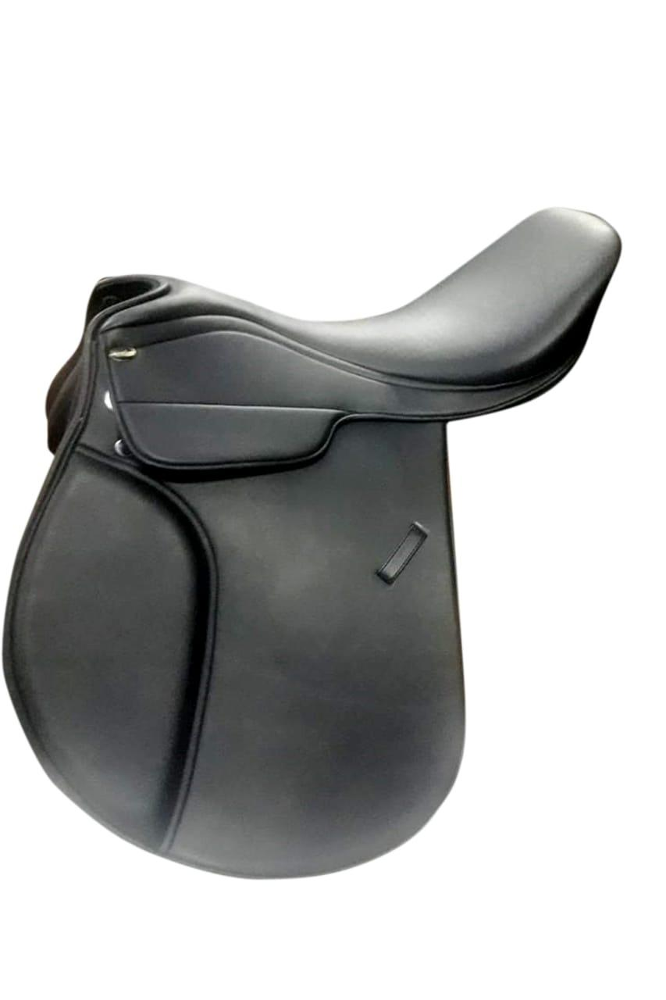
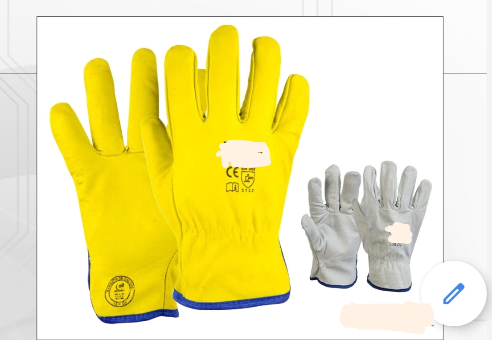

Stay updated with our latest announcements and product developments
May 2026

We are excited to announce our expansion into premium horse saddle manufacturing. Building on our expertise in leather craftsmanship and safety products, we are now producing high-quality horse saddles for both export markets and local demand. This new product line reflects our commitment to expanding our portfolio while maintaining the same standards of quality and excellence that define Lari Industries.
Our horse saddles are crafted with the finest leather and traditional techniques, ensuring durability and comfort for both horse and rider. We are targeting international markets in Europe and North America, while also serving the growing domestic equestrian community.
Established 2005
View CertificateSince our establishment in 2005, Lari Industries has been at the forefront of safety equipment manufacturing. Over two decades, we have served thousands of industries across manufacturing, construction, and chemical sectors. Our unwavering commitment to quality and innovation has made us a trusted partner for businesses worldwide.
We continue to invest in research and development to bring cutting-edge safety solutions to the market. Our ISO-certified facilities and skilled workforce ensure that every product meets international standards.
Ongoing

Our commitment to comprehensive workplace safety continues to drive product innovation. We are constantly developing new protective equipment to address emerging safety challenges in various industries. From specialized welding gloves to advanced safety footwear, our range continues to expand.
Each product undergoes rigorous testing and quality checks to ensure compliance with national and international safety standards. Your safety is our priority.